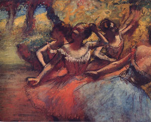

Pietro Perugino (italiano, 1447/49-1523) São Sebastião na Coluna, c.1500/10. |
 Giampietrino (italiano, ativo entre 1497/49 e 1540) A Virgem e o Menino com São João Batista, 1500/20. |
 Tiziano (italiano, 1488/90-1576) Retrato do Cardeal Cristoforo Madruzzo, 1552. |
 Tintoretto (italiano, 1518-1594) Pietà, 1560/65. |
 Delacroix (francês, 1798-1863) O Outono - Baco e Ariadne, 1856/63. |
 Corot (francês, 1796-1875) Cigana com Bandolim, 1874. |
 Manet (francês, 1832-1883) O Artista - Retrato de Marcellin Desboutin, 1875. |
 Degas (francês, 1834-1917) Quatro Bailarinas em Cena, 1885/90. |
 Hans Memling (flamengo, 1435-1494) A Virgem em Lamentação, São João e as Pias Mulheres da Galiléia, 1485/90. |
 Hans Holbein (flamengo, 1497-1543) O Poeta Henry Howard, Conde de Surrey, c. 1542. |
 Van Dyck (flamengo, 1599-1641) Retrato de Willian Howard, 1638/40. |
 Thomas Lawrence (inglês, 1769-1830) Os Filhos de Sir Samuel Fludyer, 1806. |
 John Constable (inglês, 1776-1837). A Catedral de Salisbury Vista do Jardim do Bispo, 1821/22. Óleo sobre tela, 89 x 114 cm. |
 Vítor Meireles (brasileiro, 1832-1903). Moema. Óleo sobre tela, 129 x 190 cm. |
 Hieronymus Bosch (flamengo, 1450/60-1516). As Tentações de Santo Antão, c. 1500. Óleo sobre tela, 127 x 101 cm. |
 Goya (francês, 1840-1927). Jogam cachorros ao touro (da série "Tauromaquia") 1815-16. Água-forte, 32,7 x 44,5 cm. |
 Monet (francês, 1840-1927). A Canoa sobre o Epte, c. 1890. Óleo sobre tela, 133 x 145 cm. |
 Renoir (francês, 1841-1919). Rosa e Azul , 1881. Óleo sobre tela, 119 x 74 cm. |
 Andrea Mantegna (italiano, 1431-1506). São Jerônimo Penitente no Deserto, 1448/1451. Têmpera sobre madeira, 48 x 36 cm. |
 Giovanni Bellini (italiano, 1425/33-1516). Madona Willys, 1480/1490. Óleo sobre madeira, 75 x 59 cm. |
 Van Gogh (holandês, 1853-1890). O Escolar , 1888. Óleo sobre tela, 63 x 54 cm. |
 Virgem com o Menino Jesus (1310-1320). Obra do Maestro di San Martino alla Palma |
 Adoração dos Reis Magos (c. 1375). Obra de Paolo Serafini da Modena |
 Madona com o Menino no Trono e Quatro Santos (1410-1415). Painel do Maestro del 1416 |
 Giovanni Bellini |
 Virgem com o Menino Jesus (1470-1480). Pintura de Jacopo del Sellaio |
 Ecce Homo (1480-1500). Pintura de Niccolò di Liberatore |
 Virgem com o Menino, São João Batista Criança e um Anjo (1500-1510). Pintura de Piero di Cosimo |
 Pietro di Cristoforo Vanucci. A Entrega das Chaves a São Pedro, Capela Sistina. |
 Virgem com o Menino e São João Batista Criança (1510-1515). Pintura de Francesco Francia |
 Retrato de Alvise Contarini (1525-1550). Pintura de Paris Bordone |
 Vénus e Cupido. Alessandro Allori |
 Senhora com Chapéu de Palha (1902-1905). Pintura de Giovanni Boldini |
 Os pastores de Arcadia. Nicolas Poussin, pintor francês. |
 Mulher descascando batatas, Jean-Baptiste-Siméon Chardin. |
 Satira sobre a "Falsa Perspectiva" de William Hogarth, 1753. |
|
|


{kind=link}
|
|